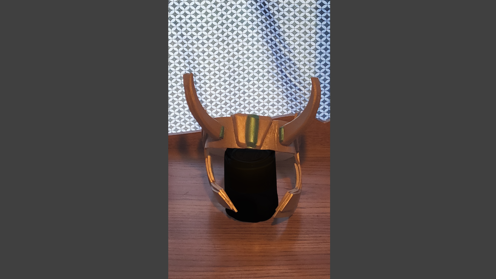

Lokis'/Sylvies' headdress
I have been falling for 30 minutes!
I made this while the loki TV series was airing (finished it before the last episode came out too).
I didn’t really base it completely off one one helmet instead I combined a few.
Mainly combining president Lokis’and Sylvie’headdresses with a custom paint job.
It is made out of only foam and sadly has been a little squished, I covered it up pretty well in the images though.
Overall I’m not too happy with the way it came out.
At a glance it looks pretty good but the horns and decoration in the middle are all off centered.
And the horns are also uneven.
Furthermore I split glue on it while making it and there are bumps in areas where I could not get all the glue off.
